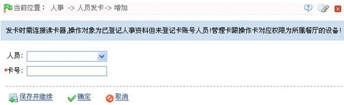
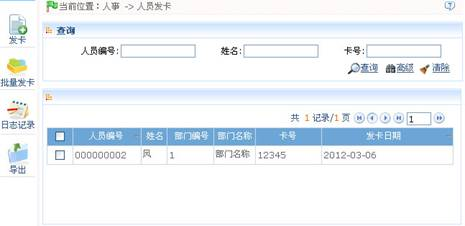
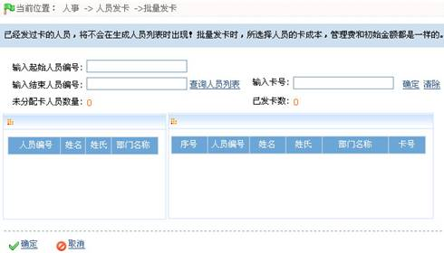

在人员发卡页面中，用户可以为人员发卡。以便人员考勤。
注意：在卡管理过程中，操作正在进行时，请勿移动卡片（卡片须置于发卡器的置卡处），以免操作失败。待操作成功后，方可移开卡片。
发卡：
为人员分配卡号，以便人员进行考勤操作。
1、发卡器使用说明
发卡器通过USB接口与PC相连，鼠标点击卡号录入栏，在发卡器上刷卡，则在录入栏自动显示该卡卡号。
发卡的具体步骤
（1）、点击【人事】-【卡管理】-【发卡】，进入如下图所示的发卡页面：

各字段说明：
卡号：输入卡号或使用发卡器获取卡号。
（2）、设置完成后，单击【确定】按钮，开始发卡，待成功后自动返回卡管理页面，此时页面的卡信息列表中将显示该条卡的相关信息。

注意：一人仅能发一次卡。系统支持发卡器发卡和手工录入卡号发卡。
批量发卡
具体步骤如下：
1、点击【人事】—【人员发卡】—【批量发卡】，显示批量发卡编辑页面:

2、输入起始和结束人员编号（请勿超过系统支持的人员编号最大位数），单击【生成人员列表】，显示此编号区间所有无卡人员；
3、输入卡号（或者使用发卡器发卡），每点击一次确定，则依次从上向下为列表中人员分配卡号，直到所有人员发卡完毕；
4、点击【确认】，完成发卡操作并返回，列表中显示人员即相应卡号。